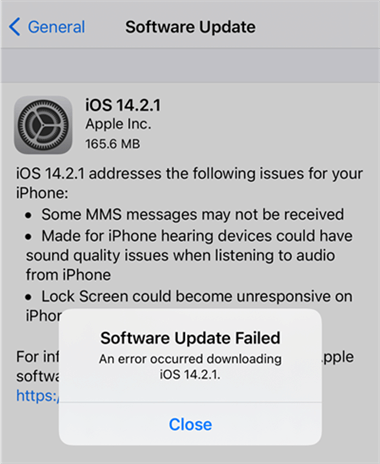
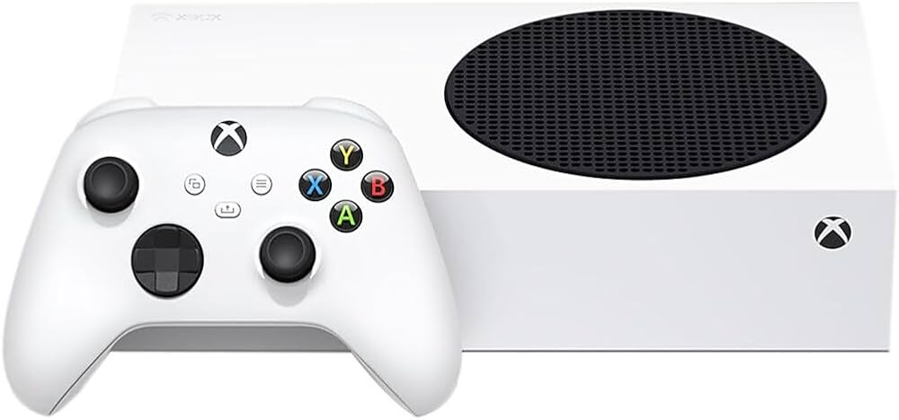

I think everyone can agree that planned obsolescence is a bad thing. But how much does it affect the computer industry today? Should something be done about it? In my opinion, the computer industry is a giant mixed bag of companies and products, so naturally, some are good, some are bad, and some are planned to fail. The only company I'm aware of today that I'm certain is guilty of planned obsolescence would be Apple. I’m mostly referring to the iPhone in particular. Not only do they make a new one every year, but many people have experienced strange issues with phones that are only a few years old, not to mention the inability to update older phones to the latest iOS.
Somehow, Apple has gained a sort of image that they can do no wrong to most people. Their products are made of high quality materials, and the design is typically well thought out, but that’s all most people need to see before they start buying a new iPhone every couple of years, if not every single year. Multiple of my friends have also told me that they had bought a brand new MacBook and it had something break within a year. I’ve even had my brand new AirPods mysteriously stop charging after less than two years of owning them. All of that was to say, I think some official investigations should be done on every aspect of Apple's product design. And I also think that some definitive legislation needs to be put in place because there are currently ZERO laws in the United States prohibiting the practice of planned obsolescence. In terms of other companies that practice planned obsolescence, there are a few others, but most aren’t as infamous or outrageous as Apple’s offenses. Similarly to Apple, Samsung releases new phones on a yearly basis, quickly encouraging consumers to buy a new phone even though the one they got a year ago does everything they need. As far as the phones actually breaking themselves, I’m pretty sure Samsung has a significantly better track record than Apple. The next company I’d like to talk about is Hewlett-Packard. I have seen complaints on Reddit and the HP forums that software updates are breaking some printers, and others are breaking after printing a certain number of lifetime pages. This was very surprising to me, as I thought that HP printers were top of the line. This situation is also very similar to Apple: a brand with a good image doing nefarious things under the table to make a few extra bucks. Now I’d like to talk about a completely different genre of technology, gaming. First of all, Sony’s PlayStation 4 was infamous for its complete lack of backwards compatibility, meaning it couldn’t read PS2 or PS3 discs. The old games were available to play digitally, but you had to pay for a monthly subscription. Next I’ll talk about Microsoft and the Xbox Series S; this one is personal! The Series S comes with a 500 GB internal SSD, which is problematic for a slew of reasons. First of all, the operating system takes up a whopping 198 GB, leaving you with enough storage for approximately two or three games. All of the modern games also require you to install them on that SSD, no external storage. To top it off, there is no disc reader. But worry not, because you can get an official 500GB internal storage expansion card for the low low price of $79.99! This is why part of me wants to buy a PlayStation 5.
I wasn’t sure at first, but after some online research, I’d discovered that a good number of giant tech companies are still practicing planned obsolescence today! However, the vast majority of people either haven’t noticed or don’t care. But I think that this is a rather pressing issue; tech corporations don’t need to be siphoning even more money out of the general public's wallets. Not to mention the tremendous amount of waste that is being created from the various things that stop working. But nothing is going to change unless more people notice, and then we could get some legislation put in place.